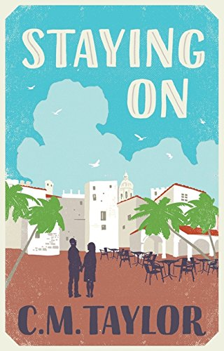

Staying On 2018
A broken family under an expat sun that never quite warms the bones.
A geriatric coming-of-age story about Tony and Laney, an old married couple locked in a silent war about going home to England, or staying on in their expat life. They’re stuck – until their self-possessed daughter-in-law turns up to budge them along, and to solve her own long-buried issues.
Every keystroke of Staying On was recorded for the British Library’s Keystroke Project (2014–2018) and preserved in the national collection – a record of a novel’s making that no other living novelist holds.
“A melancholy and moving family drama.”Sunday Mirror
“Told with humour and enormous compassion… a beguiling story about broken people who have all the feelings and none of the words. Utterly captivating.”Damien Owens, author of Dead Cat Bounce
“A trademark sweet-and-sour Mike Leigh film in novel form.”Matthew Hirtes
Where to buy